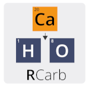

The R package ‘RCarb’ provides a collection of various R functions to model dose rates in carbonate-rich samples. The package is a translation of the MATLAB program ‘Carb’ by XXXX
Installation
i. Requirements
Depending on your OS please download and install one of the following:
Windows (32/64bit) - ‘Rtools’ (provided by CRAN)
http://cran.r-project.org/bin/windows/Rtools/
Mac OS X - ‘Xcode’ (provided by Apple)
https://developer.apple.com/xcode/downloads/
For Linux users gcc often comes pre-installed in most distributions. Should gcc be not available, however, we kindly refer to the exhaustive collection of installation guides depending on the linux distribution.
ii. Install the package
To install the latest development builds directly from GitHub, run
if(!require("devtools"))
install.packages("devtools")
devtools::install_github("R-Lum/RCarb@master")To install a developer build other than ‘master’, replace the term ‘master’ in the codeline by the name of the wanted developer build (not available yet).
Note
The package comes without any guarantee!
Please further note that this version is a development version and may change day by day. For stable branches please visit the package on CRAN.
License
This program is free software: you can redistribute it and/or modify it under the terms of the GNU General Public License as published by the Free Software Foundation, either version 3 of the License, or any later version.
This program is distributed in the hope that it will be useful, but WITHOUT ANY WARRANTY; without even the implied warranty of MERCHANTABILITY or FITNESS FOR A PARTICULAR PURPOSE. See the GNU General Public License for more details.